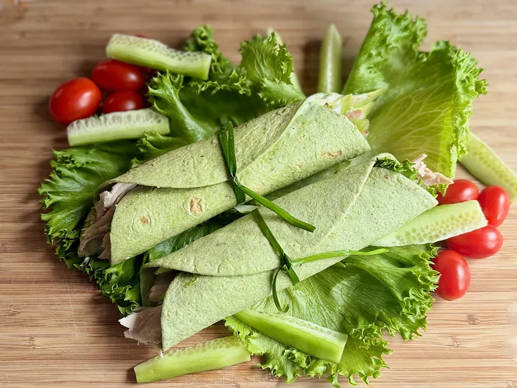

Green Goddess Chicken and Cucumber Wraps
Delicious and Healthy chicken and cucumber Green-Goddess-Chicken-and-Cucumber-Wraps

Prep Time
10 minutes
Total time
10 minutes
Servings
2 servings
Ingredients
- 2 (7 inch) spinach herb tortillas, such
as Mission® Carb Balance Tortillas
- 2 leaf lettuce leaves, washed and
completely dried, plus more for serving
- 2 (1 ounce) slices mozzarella
- 2/3 cup shredded cooked chicken breast
- 1 cucumber, peeled
- 1/2 avocado, thinly sliced
- thin slice sweet onion, separated into rings
- 2 tablespoons purchased green goddess salad dressing
- 2 green onion leaves or 2 chives (optional)
- grape tomatoes, for garnish (optional)
Step 1
- For each wrap, place a tortilla on a flat
work surface and cover half the tortilla surface
with a piece of leaf lettuce.
Top lettuce with 1 mozzarella slice, and distribute 1/3 cup shredded chicken over cheese.
Step 2
- Cut cucumber in half crosswise. Cut one half into 6 to 8 cucumber spears, and set aside.
Use a vegetable peeler to shave remaining half of cucumber into very thin pieces,
avoiding seeds. Place 1/2 of shaved cucumber on top of chicken.
Step 3
- Add half the avocado slices and half the sweet onion rings.
Drizzle with 1 tablespoon green goddess dressing.
Begin rolling the tortilla from the filled edge to the unfilled edge.
Roll wrap in a paper towel to mold.
Meanwhile, repeat steps with remaining ingredients for second wrap.
Step 1